From Streets to SnugglesA tale of kindness, rescue, and belonging
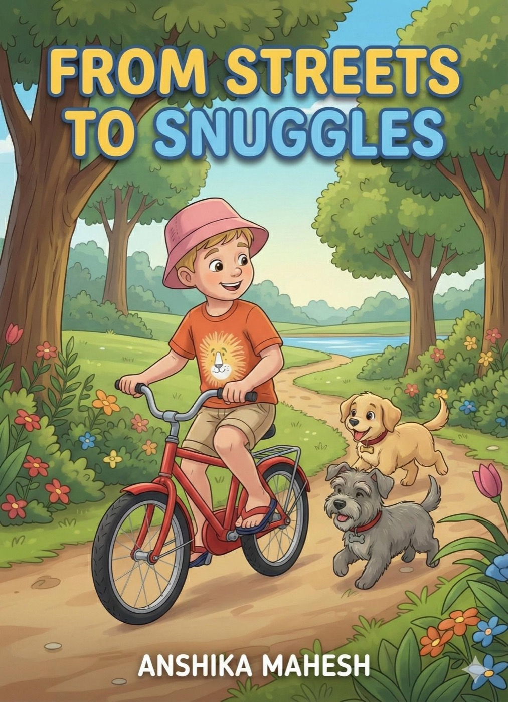
In a heartwarming tale of love, friendship, and second chances, Fluffy and Snowy find their way from the harsh streets to a loving home — thanks to one kind boy named Sam.
25 Chapters
- A Lonely BeginningBundle, a young puppy, struggles to survive alone on the streets.
- A New FriendA kind stray dog offers Bundle food and shelter from the rain.
- The Function HallThe two dogs find leftover food at a party but are spotted by a boy.
- A New HomeSam takes Bundle and his friend home, offering them safety.
- Settling InThe pups get their first bath, food, and a walk in their new home.
- A New ResponsibilitySam's parents let him keep the dogs, but only if he takes good care of them.
- Shopping for the DogsSam excitedly buys toys, beds, and treats for his new pets.
- A Trip to the VetThe dogs are nervous about their first visit to the vet.
- The Vet's OfficeThey meet other animals and get their check-ups.
- The Vet VisitThe vet gives them injections, but they barely notice!
- Vaccination DayA few treats make the visit easier, and the pups start learning tricks.
- Meeting RioThe pups meet Rio, a friendly dog, and make a new friend.
- A Happy HomeLife with Sam feels warm, safe, and full of love.
- Thunderstorms and VisitorsThe dogs fear thunder but become loved by visitors.
- Reunion with RioThe pups reunite with Rio and learn fun new tricks.
- The HikeA fun but exhausting adventure picnic at the top.
- Missing SamThe dogs miss Sam when he's at school, but a trainer helps keep them busy.
- Show and TellSam is excited to showcase his pets at school.
- The Big DayThe pups impress everyone with their tricks at the event.
- Learning New TricksThe dogs continue training and bond even more with Sam.
- A Holiday in GoaThe pups enjoy a beach vacation and their first swim!
- New Year CelebrationA festive time filled with joy, a play, and delicious food.
- Unexpected Reunion!Bundle meets his first owner in a surprising twist.
- Bundle's TaleThe pieces of Bundle's past finally come together.
- A Perfect EndingThe pups are home for good, dreaming of more adventures ahead.
A Lonely Beginning
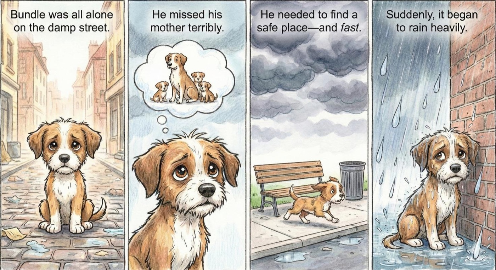
Bundle was all alone on the street. The road was a damp and dirty place to live, and Bundle didn't like it one bit. But where else could a puppy as young as one month go?
He had been separated from his mother when he was just four weeks old. He missed her terribly and to make matters worse, it was difficult to find food and water on his own.
As he wandered the streets looking for shelter, the sky turned gray. It looked like it was going to rain, so he needed to find a safe place—and fast. He ran everywhere, looking for a hole or a bus stop to hide in, but there wasn't any shelter around.
Suddenly, the clouds opened up, and it began to rain heavily.
A New Friend
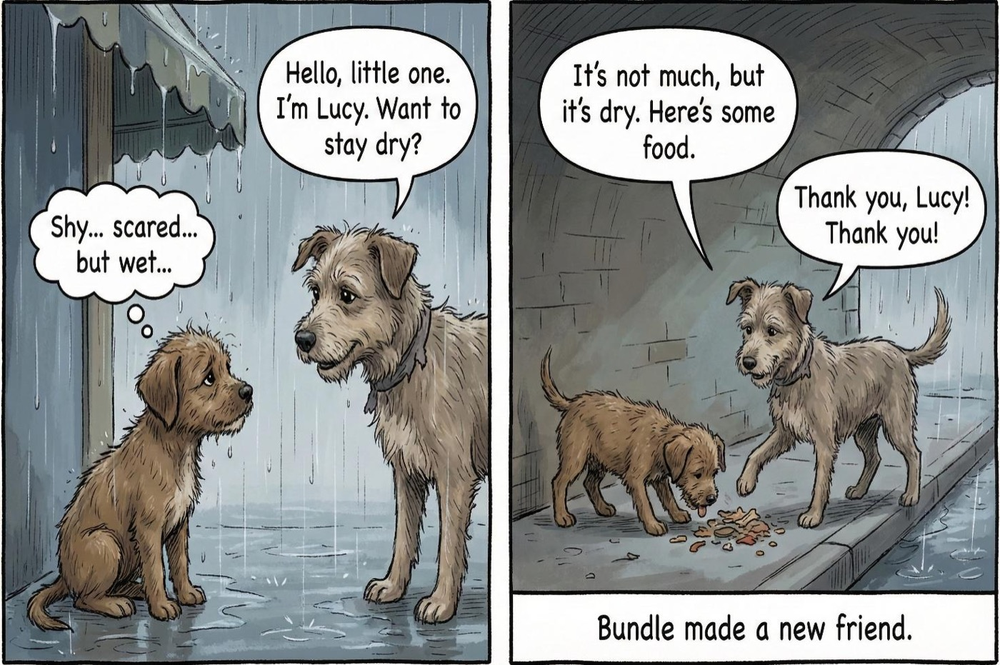
Poor Bundle! He hated getting wet in the rain. Just then, another dog saw him shivering and took pity on him. She decided to help. She walked toward him and spoke gently.
"Hello, I am a street dog like you," she said. "If you want, I can help you stay dry."
Until then, Bundle had never spoken to any other dog because he was very shy and timid.
"Ok," he whispered. "Thank you for helping me."
She led him to a sheltered gutter and gave him some leftover food she had saved, just in case of an emergency. Bundle was very grateful and thanked her immensely.
When the rain finally stopped, the two dogs stepped out together to try and find some more food to eat.
The Function Hall
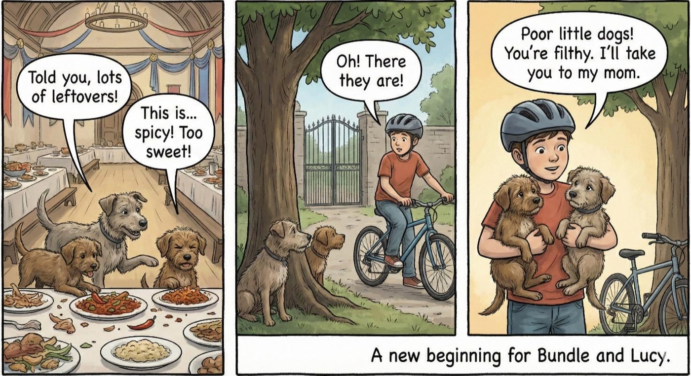
In a big hall nearby, a celebration was taking place.
"Come on," the new friend said to Bundle. "There will be lots of leftover food here."
He followed her through the gates of the hall. She was right; there was a feast! Bundle took a big hungry bite of some food, but he immediately choked. It was too spicy! He tried to taste something else, but it was too sweet. Finally, he managed to find some plain food to eat before running off with his friend.
Though they tried their best to camouflage themselves in their surroundings, they weren't careful enough. A young boy on a bicycle spotted them both hiding behind a tree.
The dogs ran as fast as they could, but the human was faster.
He caught them both gently and said, "Poor little dogs! Look how filthy and dirty they are. I will take them to my mother and ask her what to do."
A New Home
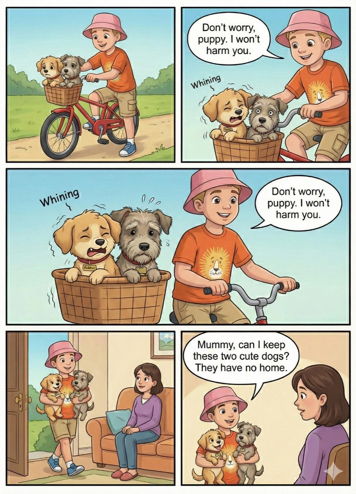
The boy placed Bundle and the other dog into his bicycle basket and pedalled away toward his house.
Bundle whined in fear. He wanted to run away, but he was too small to jump out. The other dog looked scared, too. Bundle was so terrified that he started shaking continuously.
The boy saw him shivering and smiled kindly. "Don't worry, puppy," he said. "I won't harm you for anything in the world."
Once the boy reached his house, he gently carried the two dogs into the living room. He went straight to his mother.
"Mummy, can I keep these two cute dogs?" he asked. "They have no home or family."
Settling In
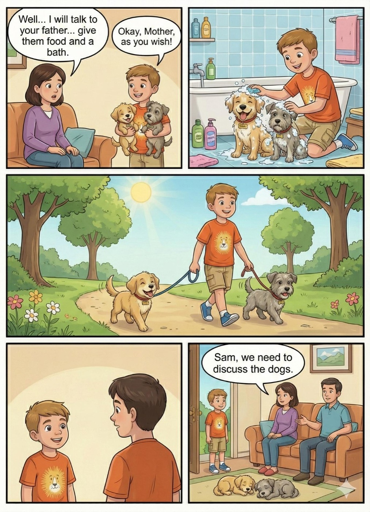
"Well," said his mother in astonishment. "I will talk to your father and let you know later. Until then, Sam, you should give them some food and a bath. They will look much better after that."
"Okay, Mother, as you wish!" answered Sam happily.
He bathed them well, scrubbing their fur until they were clean and free of bugs and ticks. He gave them fresh food and cool water, and the two dogs wagged their tails to say "Thank you."
After they were full and clean, Sam took them for a nice long walk outside in the park. They enjoyed each other's company a lot.
Once they returned home, Sam's father and mother sat down to discuss the matter with him.
A New Responsibility
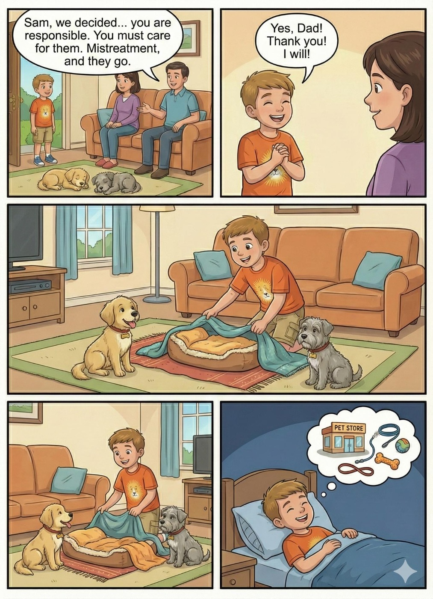
"Sam," said his dad, "your mother and I have decided that you are responsible and trustworthy enough to keep these two dogs. But they are your responsibility. From now on, you must care for them properly. Any mistreatment, and they go away for good. Okay, son?"
"Yes, Dad! Thank you for letting me keep them," answered Sam cheerfully.
He was glad to be able to keep these two cute fluffballs. He would always have friends to play with and keep him company now. He made the dogs' beds by laying down some warm rugs, but he made up his mind to get them new things the very next day.
Shopping for the Dogs
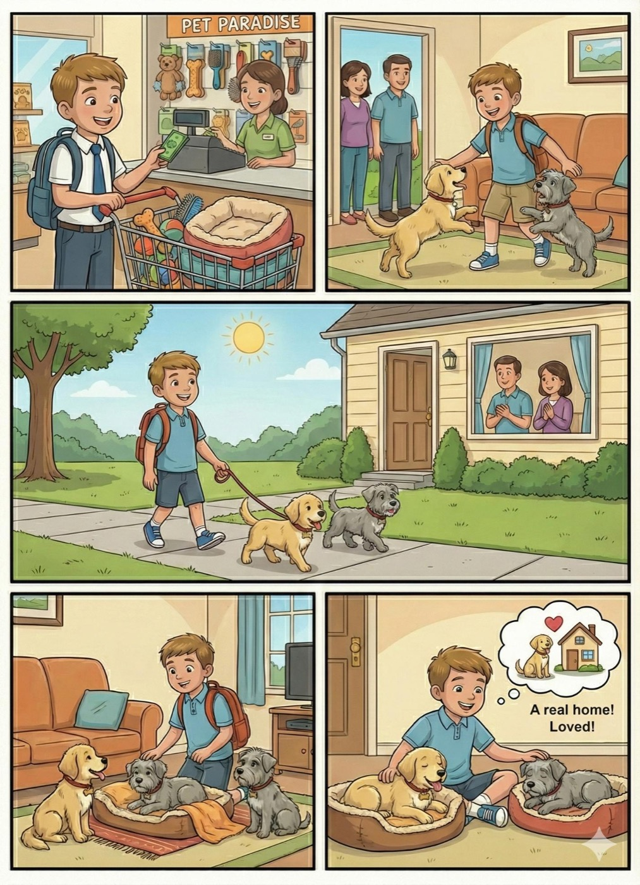
The next day, on the way home from school, Sam stopped at the pet store. He bought many exciting things: toys, brushes, and soft beds. He couldn't believe these were really his pet dogs.
The dogs were so happy to see him when he got home. Sam ate his lunch and finished his homework quickly. It was a good thing it was Friday, for he could teach the dogs a few tricks and take them for appointments without rushing.
After he finished his homework, he took the dogs for a walk outside. His parents were proud to see that he was taking initiative.
Bundle couldn't believe his luck. He finally had a good owner who loved him and cared for him.
A Trip to the Vet
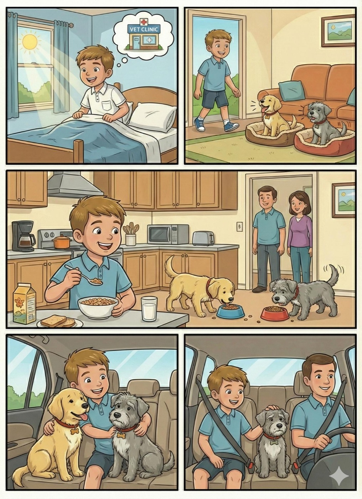
It was a bright, sunny morning. Sam woke up early, full of plans. He decided to take them to the vet that very day to get their check-ups and vaccinations.
Suddenly, he heard a noise. The dogs had just woken up. With a cheerful smile, Sam went to their bed to see how they were doing. The dogs barked excitedly; they liked this boy a lot and loved spending time with him.
After breakfast, they loaded up for the trip to the vet's office. The dogs were nervous, though—this was their first time in a car!
The Vet's Office
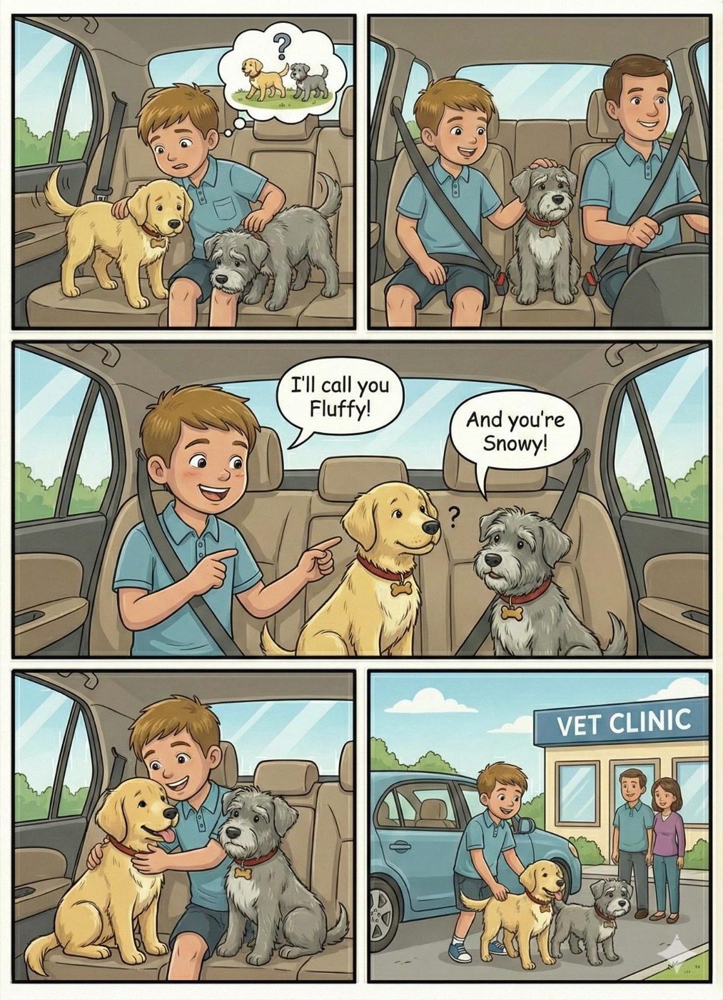
The dogs sniffed the car nervously. Bundle had never seen the inside of such a huge thing. Why couldn't they walk like they always did? Finally, Sam managed to get them settled.
During the ride, Sam decided to give them proper names. He renamed Bundle "Fluffy" and the other dog "Snowy."
The dogs tried to get used to these unusual new names, though they found it a little difficult at first! After a long drive, they finally arrived at the clinic.
The Vet Visit
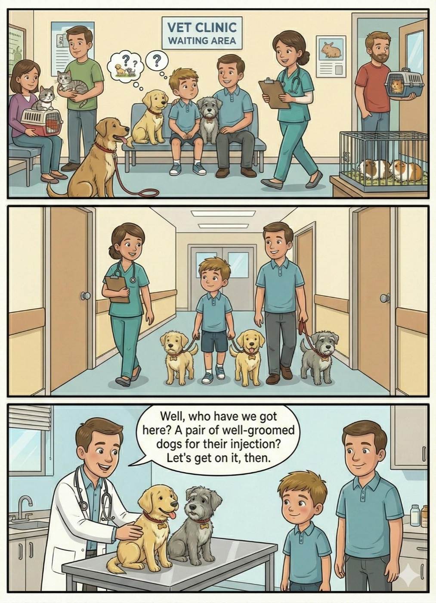
The vet's office was a peculiar sight. There were so many other animals, from cats to dogs and even guinea pigs. Why were they even here?
A lady came near them and spoke to Sam and his dad. They got up and led the dogs into another room where a big human in a white coat was sitting on a chair.
He smiled at the dogs. "Well, who have we got here? A pair of well-groomed dogs for their vaccination? Let's get on it, then."
The man picked them up and placed them gently on a table.
Vaccination Day
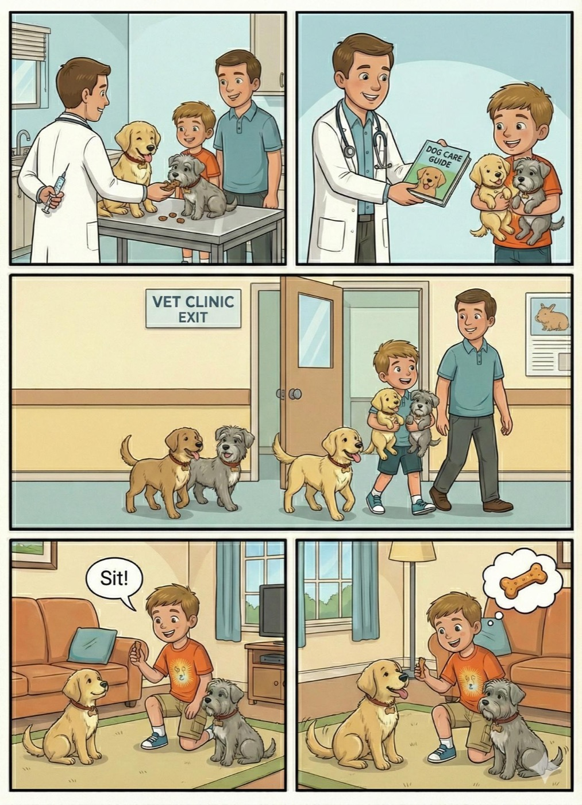
The vet took out a poky-looking thing—a needle! But he was clever; he gave the dogs some delicious treats to keep them engaged. He carefully injected them without them even knowing.
Then, he gave a book about dog care to Sam.
The dogs trotted out of the room with Sam, not suspecting a thing. They went back home in the big car. After a good tuck-in that evening, Sam taught them how to sit down. If they sat, they got a treat!
Meeting Rio
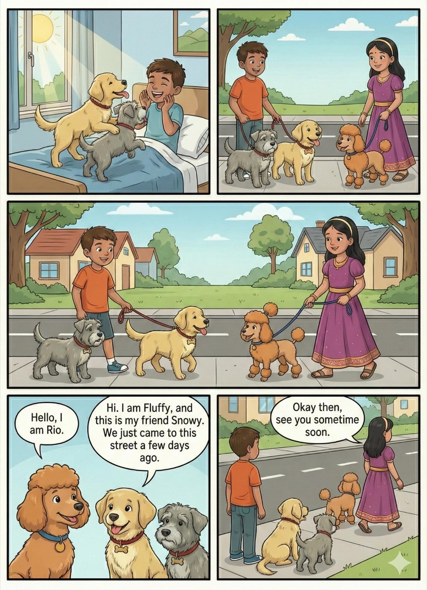
It was the next day. The dogs woke up and ran straight to Sam's bed. Sam woke up with a start! Once he saw his pets, he burst into fits of laughter.
After they had a good meal, they went for a walk on the street. Suddenly, they saw another dog. He had a funny ponytail on his head, and his owner looked very proud of him.
"Hello, I am Rio," said the dog.
"Hi," said Fluffy shyly.
"Who are you? I have never seen you or that other dog before," Rio asked.
"I am Fluffy, and this is my friend Snowy. We just came to live in this street a few days ago."
"Okay then, see you sometime soon," replied Rio before trotting away.
A Happy Home
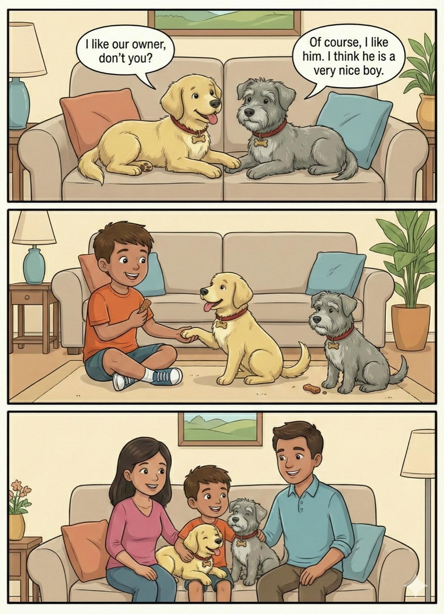
Once they reached home, they lay on the couch for a little while.
"I like our owner, don't you?" asked Fluffy.
"Of course, I like him," answered Snowy. "I think he is a very nice boy."
They had learned another trick: to give a paw. Every time they did a trick, they got a treat all to themselves to enjoy. Life was much easier now that they were cared for properly. Their old troubles were forgotten.
The dogs and Sam were getting along well. Even Sam's parents loved them; they fit right into the family. Sam liked having someone to play with after school, and when he was sad, they lifted his spirits.
Thunderstorms and Visitors
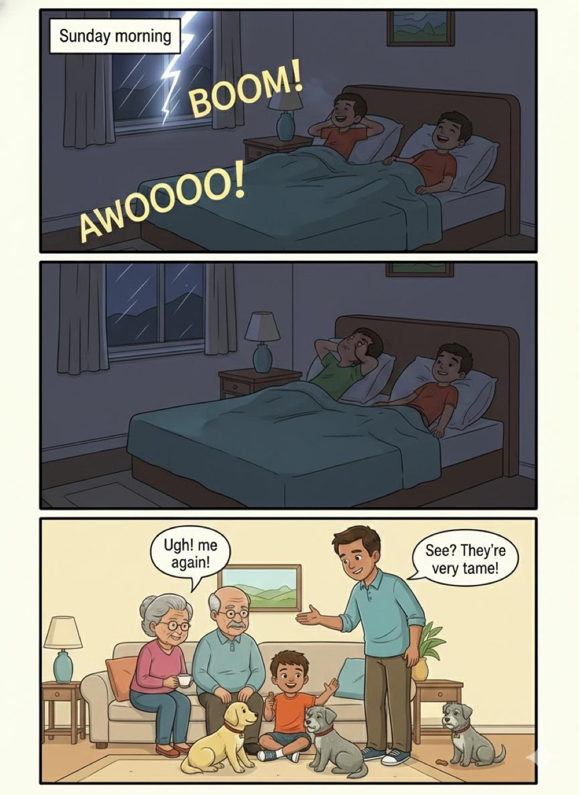
It was a dark Sunday morning. The sky grumbled, and suddenly—BOOM!
The dogs howled at the top of their voices. They hated the sound of thunder; it scared them immensely. Sam thought it was funny the way they howled, although his parents complained that it woke them up with a start!
Ever since they arrived at Sam's house, many visitors had come to see them. His grandparents were a bit scared at first, but when they saw how tame the pups were, they decided they weren't as bad as they had thought.
Reunion with Rio
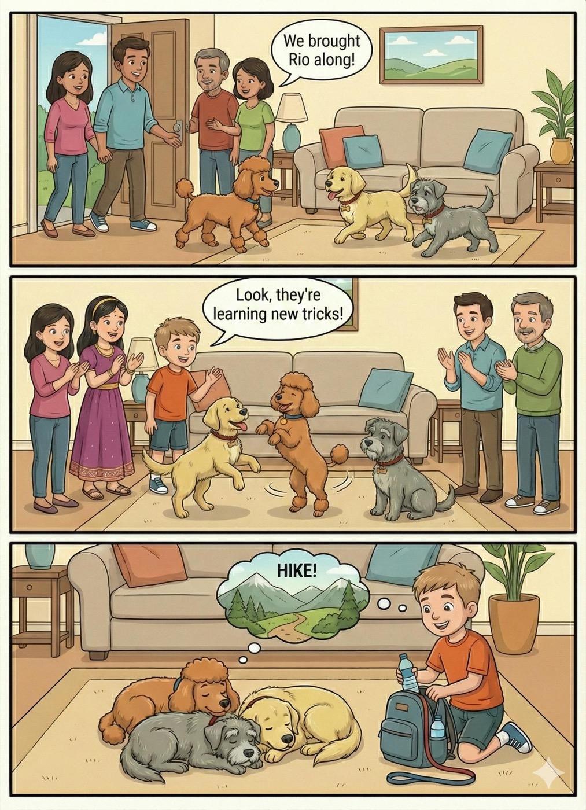
That day, the neighbours came to visit the puppies. The pups were now used to visitors. But to their surprise, the dog with the ponytail came too! It was Rio.
The three dogs played and got along very well indeed. Rio taught them some more tricks, and they picked them up quite quickly, to everyone's surprise.
After a splendid time with Rio, they took a short power nap before their walk. That day, they were going on a hike—this was going to be exciting!
The Hike
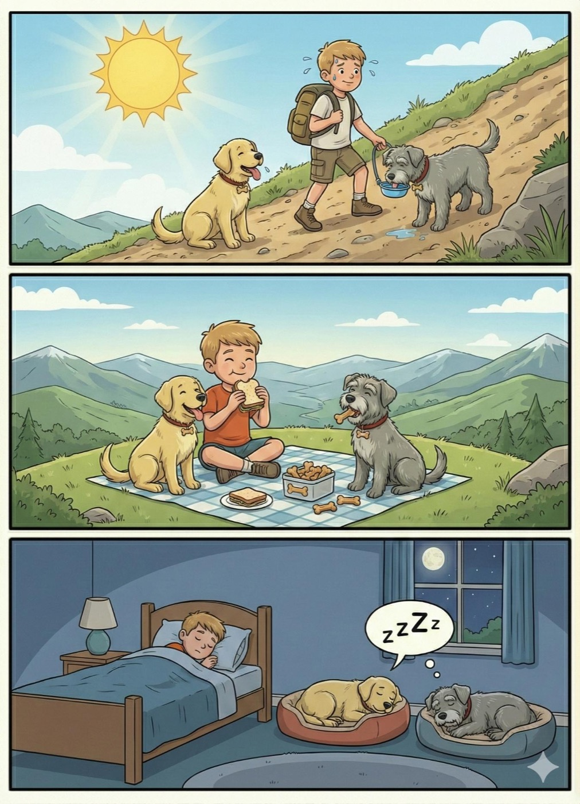
It was still quite hot when they reached the trekking spot. It was a long way up. Fluffy and Snowy got very tired and had to take breaks while climbing. It was hard and thirsty work for a dog to climb like this!
But all the same, they had fun. When they reached the top, they had a marvelous picnic. Sam had even packed some homemade dog biscuits. Yummy!
Climbing down wasn't so bad. Once they reached home, they were so exhausted that they rolled into bed straight away.
Missing Sam
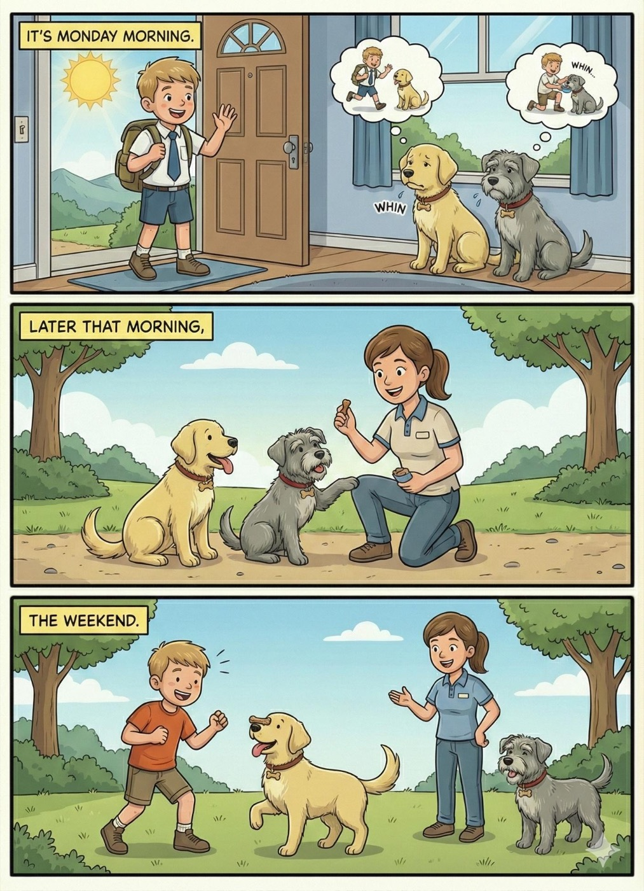
It was the next day already, but to the dogs' disappointment, it was Monday. That meant Sam had to go to school.
They whined mournfully, wishing he was going to spend the day with them.
Because Sam went to school in the mornings, his parents had hired a trainer who took them for morning walks and taught them new tricks until Sam came back. On weekends, Sam would learn from the trainer and join in. Now that was something to look forward to!
Show and Tell
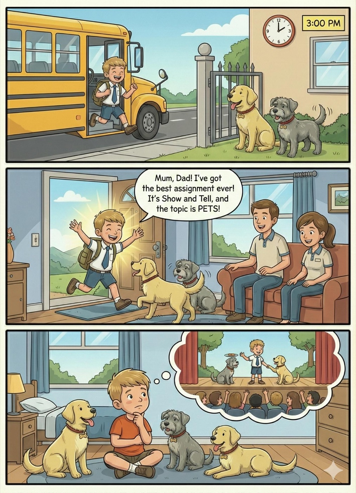
The long-awaited three o'clock seemed to take ages to come, but finally, it arrived. Sam leaped out of the school bus and ran toward his house. He was happy to see his dogs again, and his face was glowing with excitement.
"Mum, Dad, I've got the best assignment ever!" he shouted. "It's the school 'Show and Tell,' and this year's topic is pets! I am so excited to show everyone what the pups can do. It's going to be great."
He began thinking about what to say and what tricks to show everyone.
The Big Day
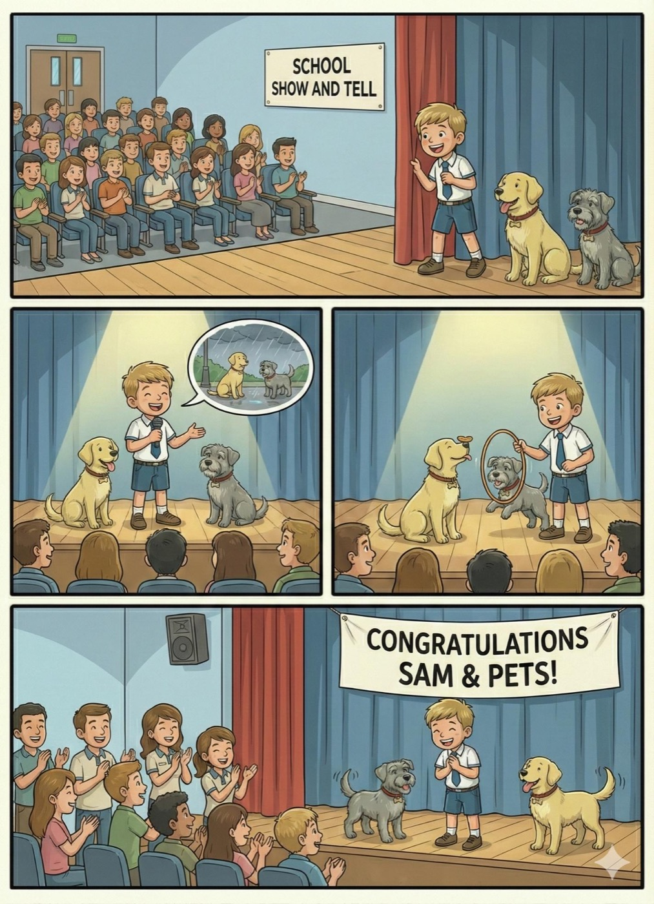
It was the day of Show and Tell. All the parents were watching. Sam was very excited to show the audience what his pets could do. He had been practicing all week with the dogs, teaching them new tricks and perfecting the old ones.
Finally, after many other students had finished, it was his turn.
He went on stage, beaming with pride, and told the story of how he had found the dogs on the street. Then, he showed everyone their tricks. The audience clapped loudly! The dogs felt very special indeed.
Learning New Tricks
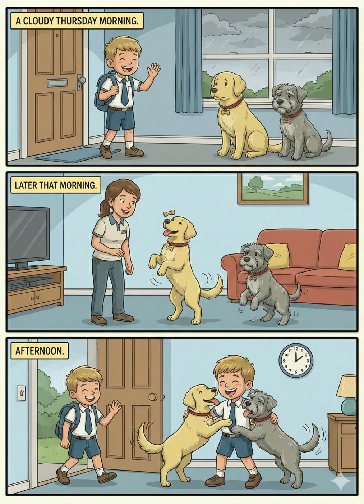
It was a cloudy Thursday morning. Sam got up early, for he had to go to school. The dogs weren't very pleased about this. Never mind—the trainer would come to entertain them soon.
They had learned to stand on their hind legs and twirl. Fluffy was a quick learner and picked up tricks instantly. Snowy, on the other paw, took a little more time to get used to things.
Sam came back early that day because of an event for the high schoolers. The dogs were very pleased!
A Holiday in Goa
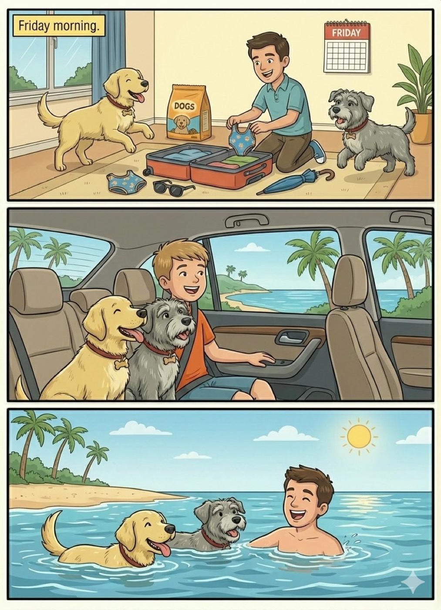
It was Friday. The dogs were waiting for this day because Sam had the next two days off. Usually, they did something special together on the weekends, but this week was different. They were going on holiday to Goa!
This was the dogs' first trip. What a lot of things they had to take—a swimsuit, sunglasses, an umbrella, and lots more. Since they were traveling by road, they needed plenty of food, too.
Finally, it was time to roll. They spent two whole days in Goa admiring its beauty. The dogs swam like pros in the sea! When they came back, they wanted to go back again immediately. Never mind, maybe next time during the summer holiday.
New Year Celebration
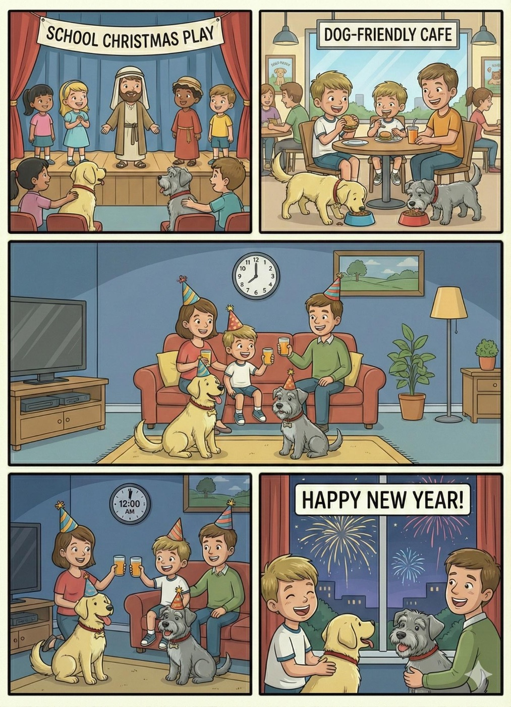
It was New Year's Eve! The dogs were happy because there was a Christmas show at Sam's school. The play was about Jesus Christ, and Sam was playing Joseph, one of the main characters.
They arrived at the school early because they wanted a seat in the front. The play was fun and joyful, and the dogs behaved very well. All the students admired them, and they got petted a lot.
When the play was over, Sam looked triumphant and happy. All the students took pictures with the principal. To celebrate the New Year, they stopped at a dog-friendly restaurant and ate a scrumptious supper. They stayed up until midnight and shared their New Year's resolutions. It was a very happy New Year.
Unexpected Reunion!
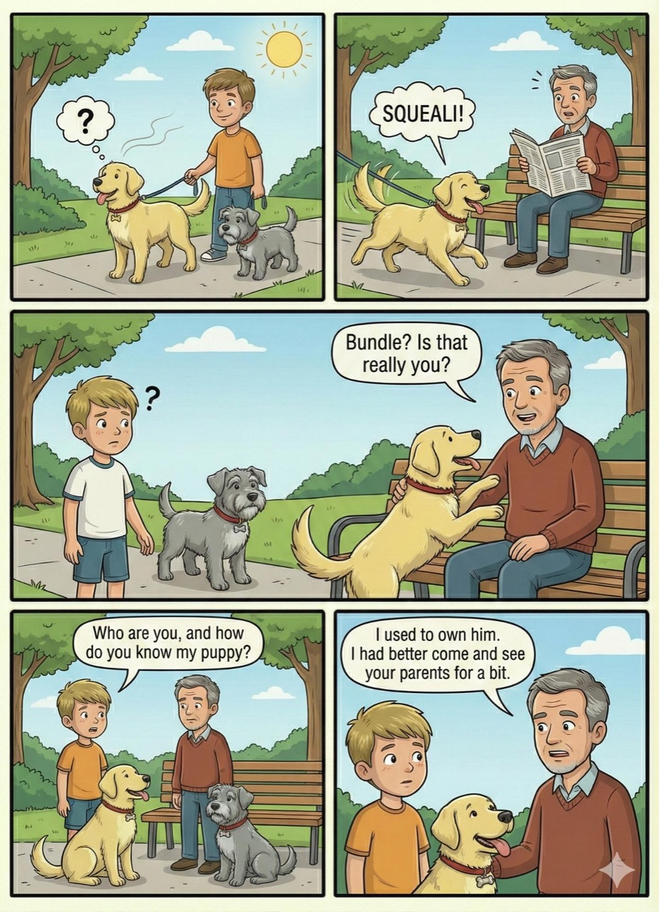
It was a bright, sunny morning, and to the dogs' delight, Sam had one last holiday before school started again.
He took the dogs on an early morning walk. As they were walking, Fluffy smelled a strangely familiar scent. He looked up and saw a man on a bench. It was his first owner!
Fluffy squealed with delight.
The human looked at him in shock. "Bundle? Is that really you?"
Sam looked surprised. "Who are you, and how do you know my puppy?" he asked.
"I used to own him before he got lost," said the man. "I had better come and see your parents for a bit."
Bundle's Tale
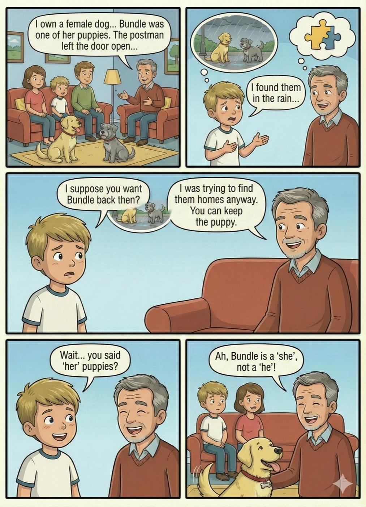
Sam took the man home and told his parents what had happened. They all sat down to discuss the situation.
"I own a female dog who gave birth three months ago. Bundle was one of the girl puppies," explained the man. "One day, the postman forgot to close the door, and Bundle managed to escape."
Sam shared his part of the tale—how he found them in the rain—and it all came together like a jigsaw puzzle.
"I suppose you want Bundle back then?" asked Sam sadly.
The man smiled kindly. "I was trying to find them homes anyway, so I don't mind you keeping the puppy."
Sam was happy; he had become very fond of Fluffy.
Then he remembered what the man said. "Wait... you said 'her' puppies?"
"Ah, well that's something you don't know," the man laughed. "Bundle is a 'she', not a 'he'!"
A Perfect Ending
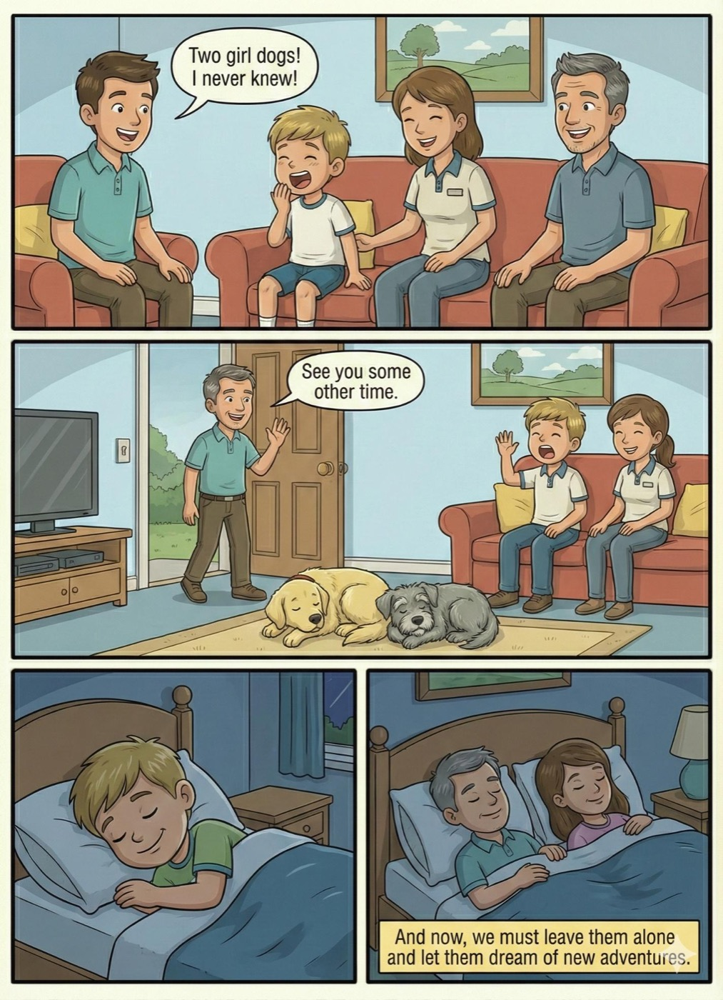
This astonished Sam and his parents.
"We have got two lovely girl dogs!" said Sam. "And I never knew the whole time!"
"I suppose you are a permanent part of our family now," his dad said, smiling.
Bundle and Snowy felt tired. It was past the time they usually slept. Without anybody knowing, they fell asleep right there on the rug.
"Well, I must get going then," said the man. "See you some other time."
Sam yawned and rolled into bed. His parents fell asleep, too. And now, we must leave them alone and let them dream of new adventures.
The End
And now we leave them to dream of new adventures.
About the Book
When Sam, a kind-hearted young boy, rescues Fluffy, their bond grows stronger with each passing day. They embark on countless adventures—learning tricks, visiting the vet, making new friends, and even taking a holiday to Goa!
Perfect for animal lovers and young readers, this touching story reminds us that sometimes, the greatest journeys begin with a single act of kindness.
Copyright © 2025 by Anshika Mahesh. Cover design by Anshika Mahesh.